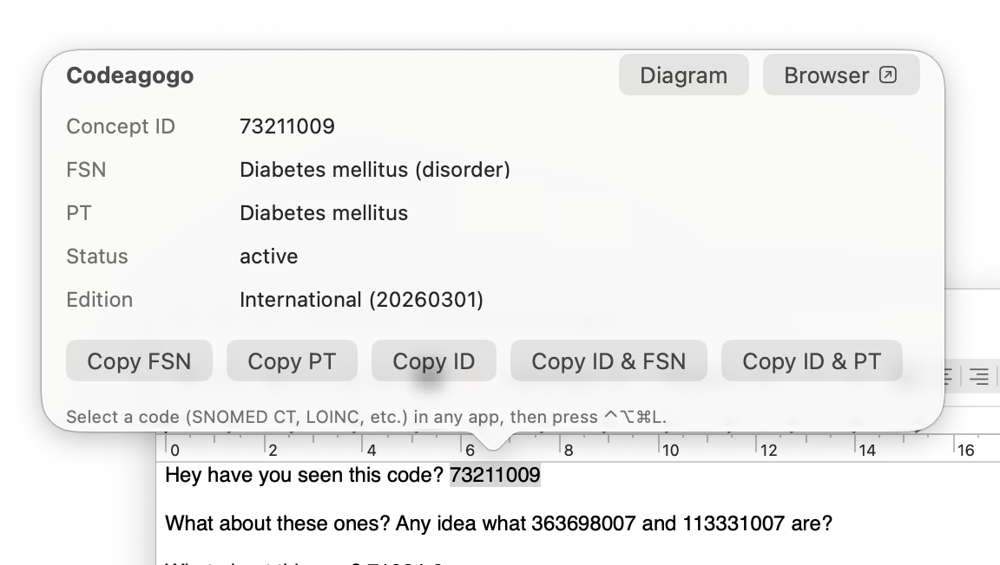
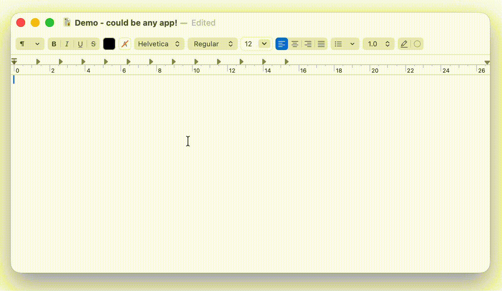
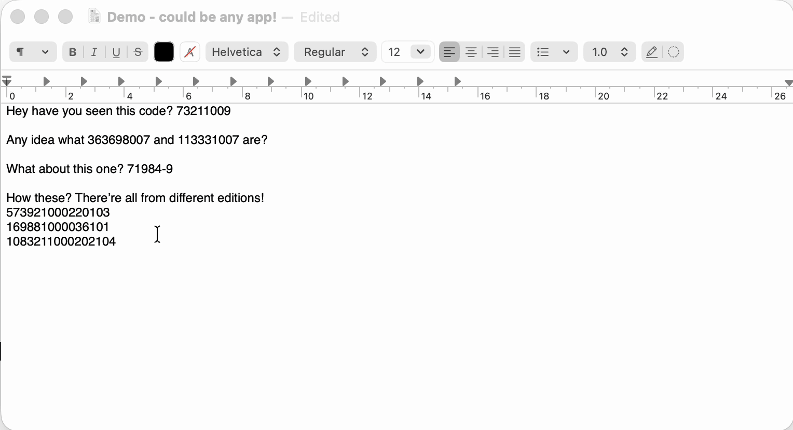
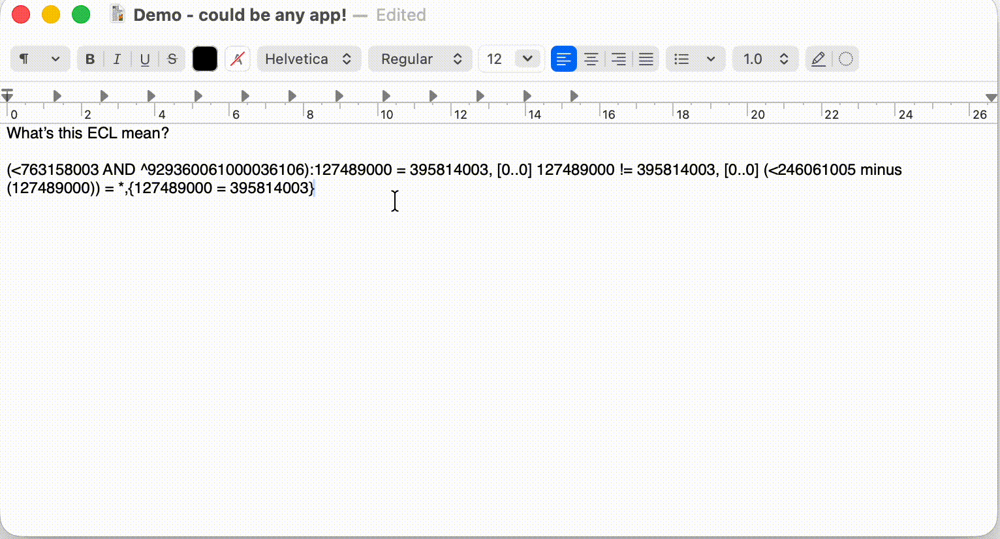
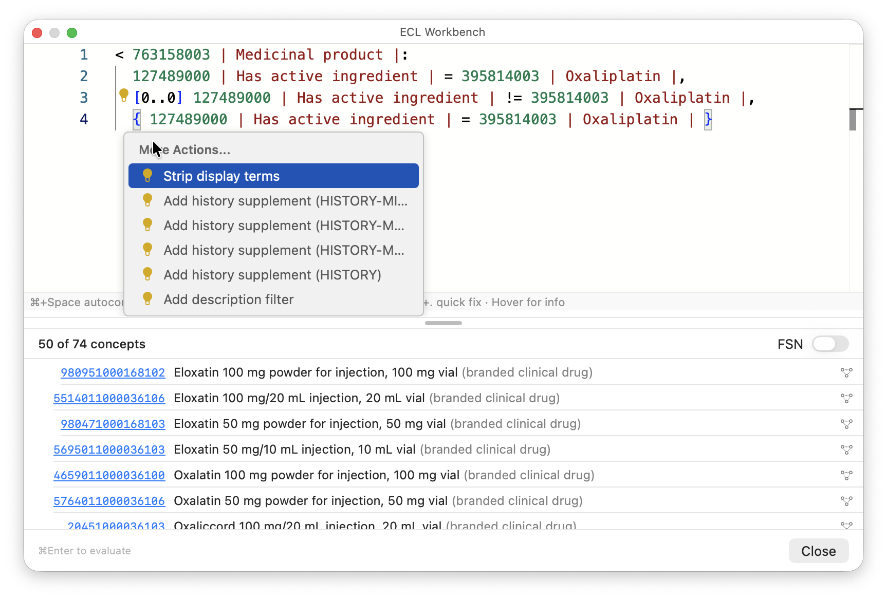
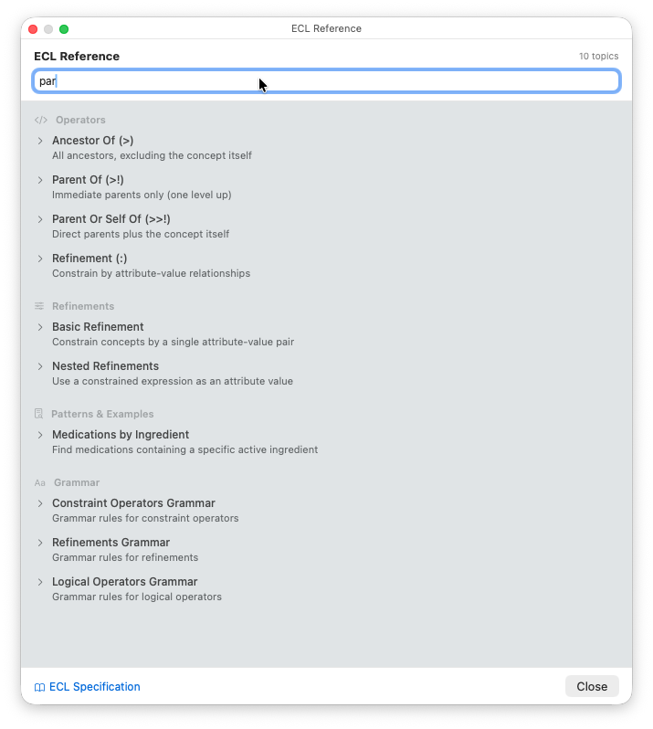
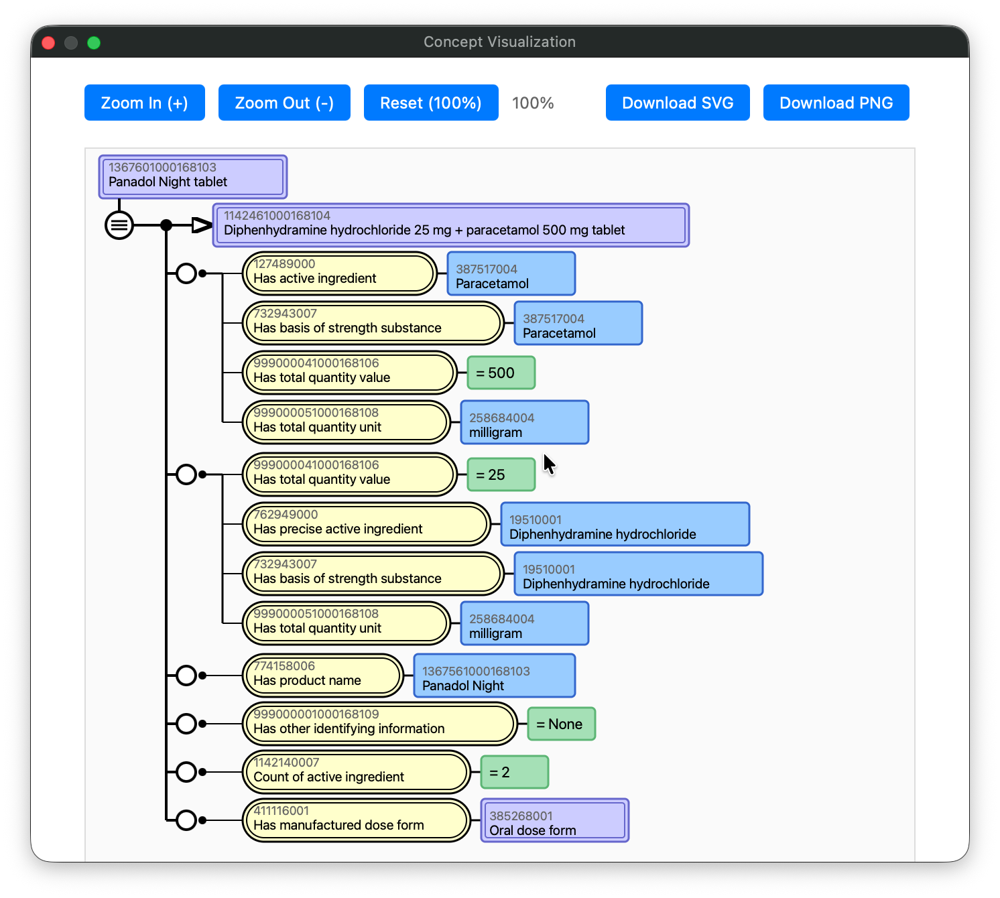

Look up, search, and annotate clinical terminology codes — waiting in your menu bar.
A native app that works wherever you can select or type text — Word, Excel, your IDE, email...anything.
macOS: brew tap aehrc/codeagogo https://github.com/aehrc/codeagogo && brew install --cask codeagogo

Open the search panel with a hotkey, type a few characters, and pick from matching concepts. Insert directly into your document — no need to switch to a browser or terminology tool. Works in Word, Excel, your IDE, or any text field.

Select a block of text with concept codes, press the hotkey, and every code gets its preferred term added in pipe-delimited format. Works with dozens of codes at once — great for annotating spreadsheets, documents...whatever you have.

Toggle Expression Constraint Language between minified and pretty-printed with a single hotkey. Indentation, line breaks, and structure — instantly. No more squinting at, or hand formatting, dense ECL expressions.

A full ECL editor with syntax highlighting, autocomplete, inline diagnostics, and code actions — powered by Monaco. Write an expression, see matching concepts instantly. Hover over concept IDs for details, use quick fixes to add history supplements or description filters, and toggle display terms with a keystroke. Open concept diagrams or browse them in Shrimp, right from the results.

Fifty searchable articles covering every ECL operator, refinement, filter, pattern, and history supplement — with syntax explanations, examples, and tables. No need to leave the app or search the specification. Stays visible alongside your work so you can look up syntax while writing expressions.

Generate SNOMED CT concept definition diagrams with one click. Export as SVG or PNG for presentations and documentation. Follows the official SNOMED CT diagramming specification, but shows properties for other code systems too (like LOINC!).

Works from any app — no switching windows, no browser tabs.
Works with any code system available on your FHIR terminology server.
Codeagogo is free and open source. Download it, set your hotkeys, and start looking up codes.
macOS: brew tap aehrc/codeagogo https://github.com/aehrc/codeagogo && brew install --cask codeagogo